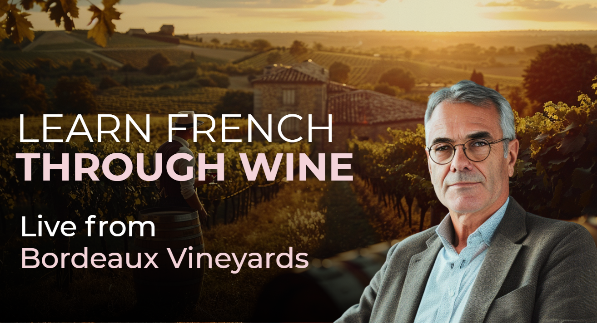
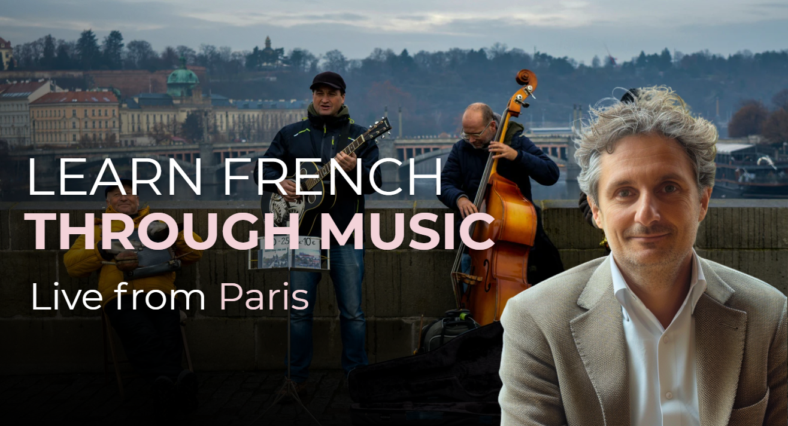

You can already say bonjour — now learn to hold a real conversation. Twenty live lessons take you from the cliffs and markets of Normandy to the boulevards of Paris, telling stories in the past and making plans for the future.
Beginner consolidates A1.1 and pushes into A1.2: longer sentences, the past tense, and the confidence to keep a conversation going.
Master the passé composé to recount your weekend, your trip, your day — the moment French starts to feel alive.
A narrative journey from Normandy’s harbours and orchards to Paris, so vocabulary is rooted in real places.
Every unit is an 85-minute live class of 8–10, with constant speaking practice and gentle correction.
Leave with a clear A1.2 level and a CEFR-aligned Acadomia certificate to show for it.
Beginner is the level where French stops being phrases and starts being conversation. Here is what A1.2 unlocks.



Beginner is a journey. We start among Normandy’s harbours, cider orchards and beaches, then board the train back to Paris — your French maturing with every stop.
A structured A1.1→A1.2 curriculum, each 85-minute live unit themed to the road from Normandy to the capital.
Ask for and give simple directions using pardon, où est… s’il vous plaît ? and vous tournez à gauche / à droite. Understand short responses (tout droit, à 5 minutes à pied).
Introduce yourself beyond the basics: say your profession with je suis + métier, your nationality, and ask tu fais quoi ?. Practice a structured 6-turn mini-dialogue.
Locate yourself using je suis là, devant…, juste en face de…, and c’est à côté de…. Practice a short clarification exchange.
Use je viens de… and j’habite à… to talk about origin and home, ask back (et toi ?), and add detail with neighbourhood references.
Talk about family using avoir: say your age (j’ai … ans), mention siblings, parents, and children. Exchange at least 3 pieces of family information.
Use bonjour / bonsoir, ask ça va ?, and respond naturally. Master the tu / vous distinction in context and close the exchange with à bientôt.
Use polite formulas (excusez-moi, est-ce que vous pouvez m’aider ?) and repair strategies. Practice closing with désolé·e / ce n’est pas grave.
Use c’est and il y a to describe location: give a street, a number, and distances (près d’ici / loin). Practice a guided ask-and-answer interaction.
Describe three elements using c’est un/une…, il y a…, je vois… and express a simple opinion (j’aime bien / je n’aime pas). Ask et toi, tu en penses quoi ?.
Give the date and day, talk about plans using demain, je vais… and cette semaine, je vais…, and agree on a meeting time. Introduce the near future tense.
Suggest Bastille Day activities (on va voir le feu d’artifice / on va au bal), negotiate a time, and confirm with ça te va ?. Discover the history and traditions of France’s national holiday.
Talk about daily routine with reflexive verbs (je me lève à…) and negate habits (je ne travaille pas le week-end). Produce at least 4 routine statements and 2 negations.
Ask and answer about the weather using il fait beau / froid / chaud, il pleut / il neige, and predict with demain, il va faire….
Based on the weather, suggest two activities, invite someone (tu veux venir ?), accept or decline, and fix a time.
Use common -er verbs to describe leisure activities, plan a museum outing (on prend des billets ? / on y va comment ? / en métro), and arrange a meeting point.
Form questions with est-ce que and conduct a short 5-question interview. Express degrees of opinion from j’aime beaucoup to je déteste.
Use question words qui, où, quand, pourquoi, comment to ask and answer in a flowing conversation. Practice tu peux répéter ? as a repair strategy.
Discuss food and drink habits using je mange…, je bois…, j’aime… parce que c’est bon, and offer or decline with tu en veux ? / oui, volontiers !.
Buy produce at a French market using quantities (un kilo de…, deux cents grammes de…) and partitive articles. Respond to vous en voulez combien ? and complete a full market exchange.
Give a free 2–3 minute spoken account of your stay using at least 5 different speech acts from FA1 — directions, family, weather, food, outings — and close warmly. A true production milestone.
A Rouen native with a passion for Normandy’s coast and kitchens, Corentin specialises in the leap from words to conversation. His classes are full of real anecdotes, gentle humour and the regional culture that makes French stick.
“The day a student tells me about their weekend in the past tense — that’s the day French becomes theirs.”
The pedagogical strength of a national institution — brought to adult learners worldwide, live from France.


Enrol in FA Beginner with the plan that fits your rhythm. Every plan includes live teaching from France, recordings for life, and your Acadomia certificate.
$840 billed yearly · full FA Beginner programme
From $224/month · cancel anytime
Our method is grounded in the applied-linguistics tradition. The French Atelier is independent and not affiliated with, nor endorsed by, the Sorbonne.
Twenty live lessons from Normandy to Paris. Tell your story in French — in the past, present and future. Join a small live group today.